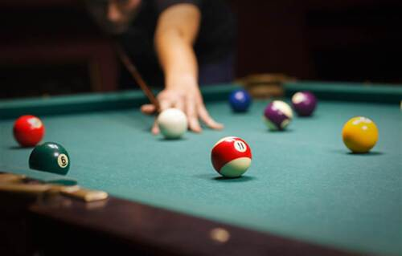

撞球，一種有多重玩法的技巧運動，共同點是使用撞球桿撞擊白色母球，令母球在撞球桌上滾動並撞擊其他球（子球），以達成特定目的（視比賽項目不同有不同規則）。 撞球運動的起源地目前尚無定論，有起源於西班牙、英國、法國等幾種不同的說法，但起源時間則大致公認為十四、十五世紀之間。最初應是在草地上進行的戶外運動，使用兩個圓形石頭，參與者使用一支靠在肩上的長曲棍，握住另一端去打擊圓石，令其滾動相碰的遊戲；後來歐洲大陸有人將其搬至室內，改在四面有框圍住的桌面上玩，參與者以曲棍打擊圓球，令球與球相撞得分，以此為雛型進行最初的無袋式撞球比賽。當時在美國則同樣使用兩個球，但改用象牙製造，並且在檯面上豎立類似鎚球的金屬球門，使球通過球門得分，形成落袋式撞球的雛型。 撞球規則
